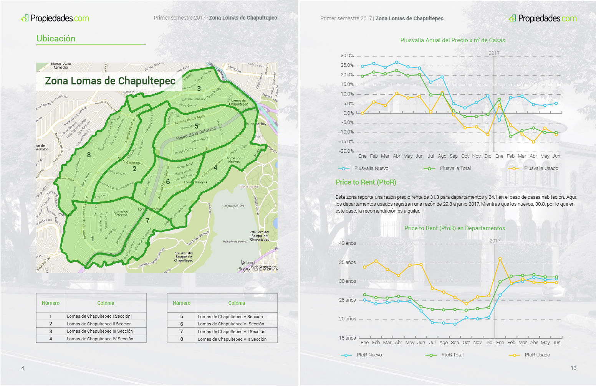

Los marketplaces son una fuente valiosa de datos para los actores involucrados en estos sectores. Sin embargo, pocas veces se hace uso de ellos ya que no generan valor per se para quienes los producen. Además, su difusión generaría gastos. La hipótesis en la construcción de este producto fue generar una estrategia de posicionamiento de marca a través de la difusión de información relevante al sector inmobiliario. De este modo la marca lograría, además de darse a conocer, posicionarse como experta en datos y análisis.
Estos reportes cumplen dos funciones, la de marketing y la de instrumento de información y difusión. Estos reportes están dirigidos principalmente a usuarios expertos en el tema. A partir de este planteamiento se tomaron las siguientes decisiones:
El formato serían varios folletos impresos, uno por zona, se guardarían en una caja y serían entregados por mensajería en las oficinas de estos personajes. El diseño se basó en la marca, pero se le dió un look and feel más formal y el producto debería ser a algo que pudieran guardar para consultar posteriormente.
Por otro lado, esta información también está disponible en formato digital para poder ser consultada por cualquier persona desde el blog.
Dada la naturaleza de estos datos y sus usuarios se decidió en la primera edición, hacer una breve análisis seguido de gráficas, cuadros y mapas para explicar las tendencias en los distintos indicadores inmobiliarios. En un principio se agregaron también indicadores que no estaban relacionados directamente con el sector pero que se consideraron relevantes como por ejemplo, búsquedas en Google. Además se agregó un anexo metodológico en el que se explicaban más a detalle los indicadores.

Posteriormente se hicieron ajustes basados en encuestas telefónicas. Se preguntó sobre el contenido y la forma de los reportes. Durante las siguientes ediciones, se eliminaron algunas de las secciones e indicadores. Se mejoró también la calidad de los datos analizados y las gráficas. Por último, se añadieron más zonas y se redujo la cantidad de texto.